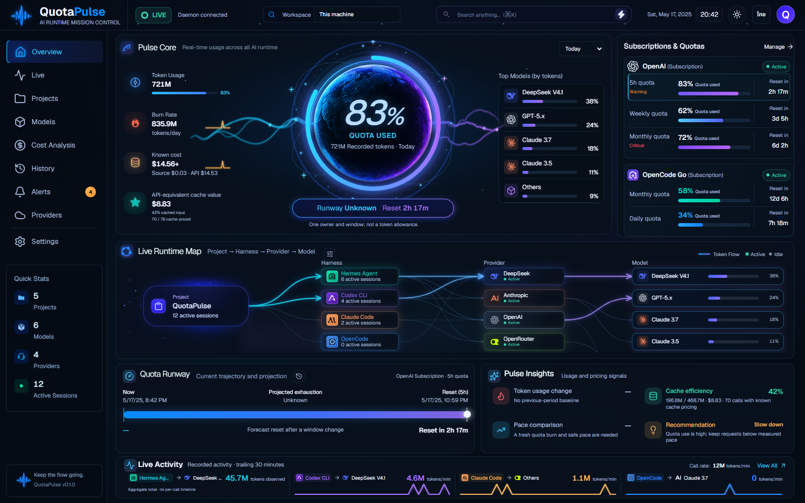
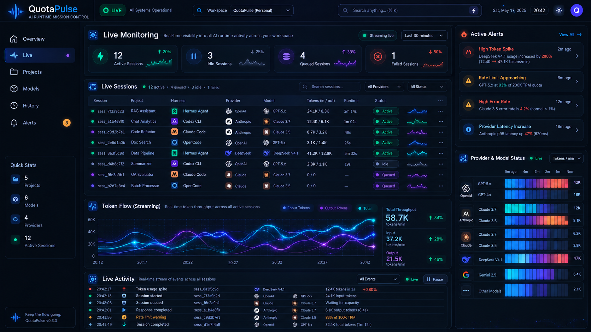
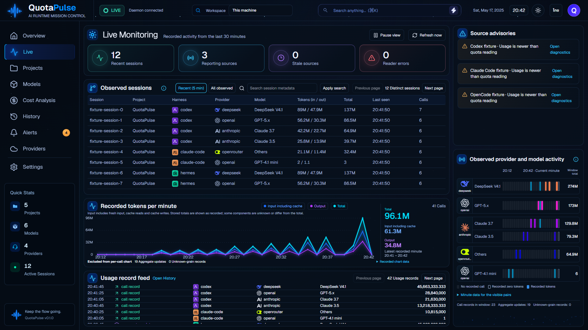
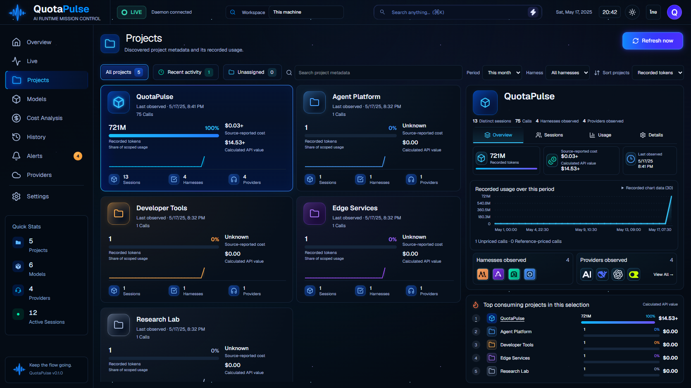
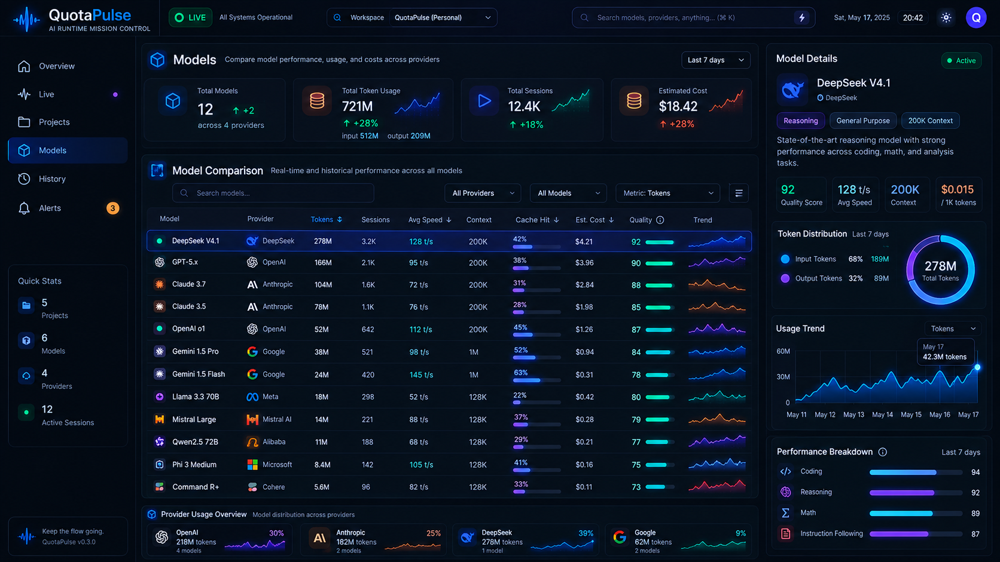
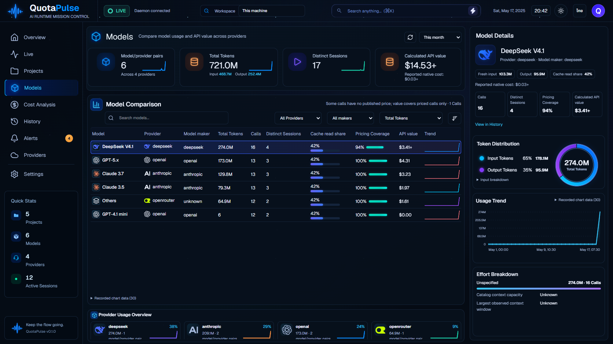
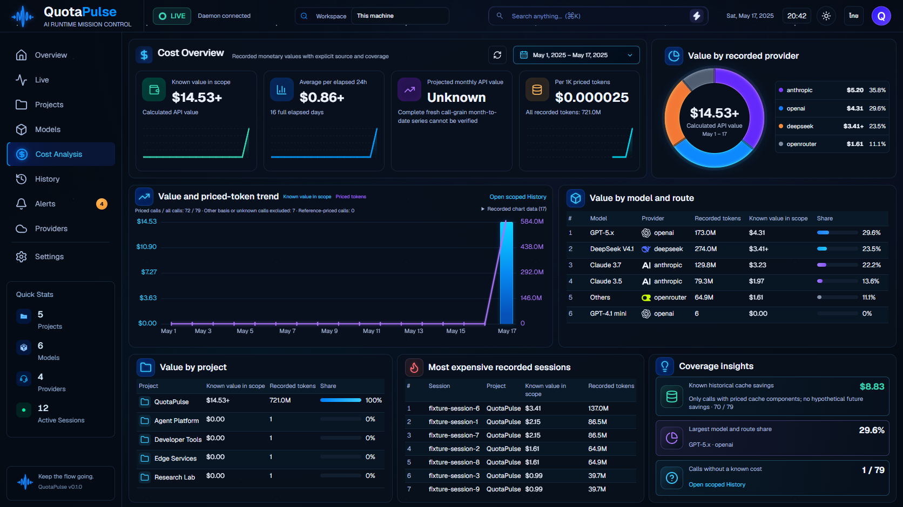
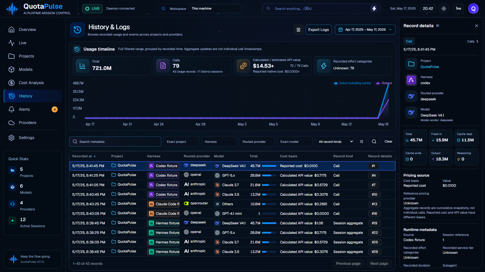
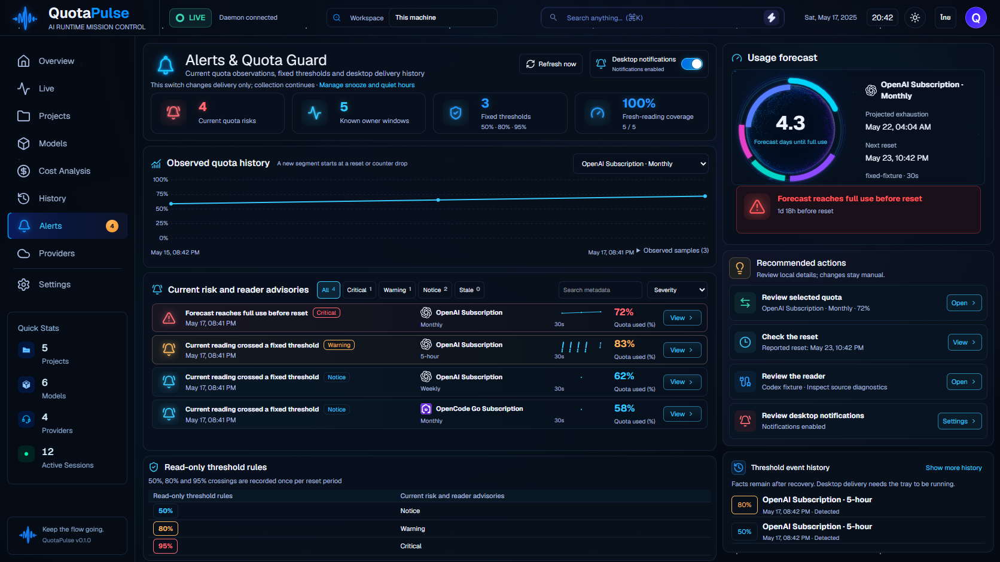
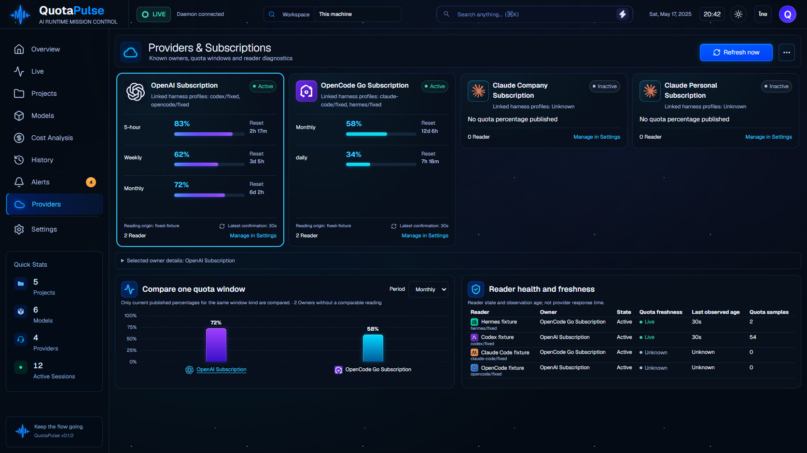

Overview
One published quota window; real period tokens and known cache savings replace token caps/ROI.


Original refs beside the current production components, rendered with one consistent synthetic dataset over real local HTTP. Actual user data changes values and graph shapes. The accepted overrides retain their explicit replacements. This review is not an approved baseline or a similarity score. Click an image for its original pixel size.
Current evidence and scope · Eight-page inventory and remaining acceptance
Compiled index SHA256: f08050f0f0bbd78880a81ad19fecf71a85f06d9a6c95b46565d73fe67d8c6627
One published quota window; real period tokens and known cache savings replace token caps/ROI.

Recorded calls, source recency and aggregate exclusions replace invented runtime lifecycle states.


Refresh and read-only metadata; scoped usage shares and separate API value replace budgets/authoring.


Calls, pricing coverage and categorical effort replace speed/quality benchmarks.


Separate monetary bases and known coverage; unavailable projection remains Unknown.


Safe metadata and pricing provenance replace prompts, responses and raw source payloads.


Fixed thresholds and manual advisory navigation; desktop delivery only, no automatic mitigation.


Detected/catalogued owners, published windows and reader diagnostics; no invented plans or providers.

